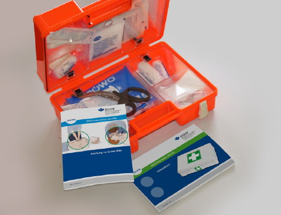

Die erste Hilfsmaßnahme am Unfallort – Erste Hilfe – ist oftmals entscheidend für den späteren Heilverlauf einer Verletzung und sogar für die Rettung von Verunfallten. Deshalb sind auch in Kfz-Betrieben gut ausgebildete Ersthelfer und Ersthelferinnen erforderlich, die schnell und richtig helfen können.
Das ArbSchG und die DGUV Vorschrift 1 "Grundsätze der Prävention" fordern für jeden Betrieb mit 2 bis 20 Versicherten mindestens einen oder eine von einer anerkannten Stelle ausgebildete(n) Ersthelfer(in).
In Betrieben mit mehr als 20 Versicherten des Instandsetzungsbereichs muss mindestens jede zehnte Person in der Ersten Hilfe ausgebildet sein. Diese Personen dürfen nur dann eingesetzt werden, wenn sie in der Ersten Hilfe ausgebildet sind und im späteren Verlauf regelmäßig fortgebildet werden.
Inhalte der Grundausbildung werden in 9 Unterrichtseinheiten vermittelt.
Die Fortbildung erfolgt durch die Teilnahme an einem ebenfalls 9 Unterrichtseinheiten umfassenden Erste-Hilfe-Training.
Auch gute Ersthelferinnen und Ersthelfer können nur wirksam arbeiten, wenn sie für die unterschiedlichen Verletzungsfälle geeignetes Verbandmaterial in ausreichender Menge zur Verfügung haben. Rechtzeitiges Erneuern oder Ergänzen ist erforderlich.
Die Aufbewahrung muss so erfolgen, dass das Verbandzeug gegen schädigende Einflüsse geschützt und im Bedarfsfall erreichbar ist.
Bei Ablauf der Verfallsdaten muss das Erste-Hilfe-Material erneuert werden.
Geeignetes Erste-Hilfe-Material enthalten z. B.:
In Abhängigkeit von der Betriebsart und der Zahl der Versicherten gelten für die Ausstattung mit Verbandkästen folgende Richtwerte aus der Technischen Regel für Arbeitsstätten ASR A4.3, "Erste-Hilfe-Räume, Mittel und Einrichtungen zur Ersten Hilfe":
| Betriebsart | Zahl der Versicherten | Verbandkasten | |
| kleiner | großer1) | ||
| Verwaltungs- und Handelsbetriebe |
1-50 51-300 ab 301 für je 300 weitere Versicherte zusätzlich ein großer Verbandkasten |
1
|
1 2 |
| Herstellungs-, Verarbeitungs- und vergleichbare Betriebe | 1-20 21-100 ab 101 für je 100 weitere Versicherte zusätzlich ein großer Verbandkasten |
1
|
1 2 |
| Baustellen und baustellenähnliche Einrichtungen | 1-10 11-50 ab 51 für je 50 weitere Versicherte zusätzlich ein großer Verbandkasten |
1 2)
|
1 2 |
|
1) Zwei kleine Verbandkästen ersetzen einen großen
Verbandkasten. |
|||
Die Erste Hilfe durch Laien oder auch durch Ersthelferinnen und Ersthelfer kann keine ärztliche Hilfe ersetzen, sondern nur ein Notbehelf bis zum Eingreifen des Arztes oder der Ärztin sein! Sie soll der verletzten Person durch einfache Maßnahmen schnell, sicher und schonend helfen, sie vor weiterem Schaden bewahren, eine Verschlimmerung ihres Zustands verhindern und sie – wenn erforderlich – für eine Überführung ins Krankenhaus transportfähig machen.
Auch kleine Wunden müssen beachtet werden. Auf keinen Fall darf eine Wunde ausgewaschen werden. Lediglich bei einer Verbrennung an den Gliedmaßen soll dieser Gliedmaßenteil mit kaltem Wasser gekühlt werden. Brandverletzungen und offene Wunden nur mit keimfreiem Verbandstoff bedecken. Andere Hilfsmaßnahmen sind nicht zulässig! Isolierband darf nie als Pflasterverband dienen.
In allen Betrieben muss die "Anleitung zur Ersten Hilfe bei Unfällen" ausgehängt oder zur Einsichtnahme zugänglich sein. In jedem Fall muss im Verbandkasten eine Erste-Hilfe-Anleitung vorhanden sein (Abbildung 21-1). Wer die wichtigsten Maßnahmen der Ersten Hilfe beherrscht, kann Unfallfolgen verringern.

Abb. 21-1 Im Verbandkasten muss eine Anleitung zur Ersten Hilfe vorhanden sein